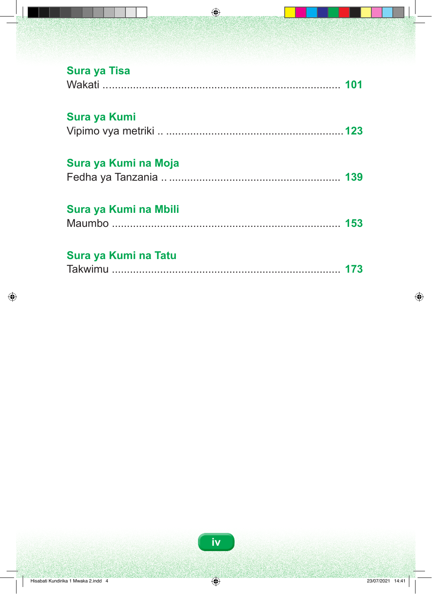

107
129
145
159
179

iv Sura ya Tisa Wakati .. ............................................................................. 101 Sura ya Kumi Vipimo vya metriki .. ...........................................................123 Sura ya Kumi na Moja Fedha ya Tanzania .. ......................................................... 139 Sura ya Kumi na Mbili Maumbo ............................................................................ 153 Sura ya Kumi na Tatu Takwimu ............................................................................ 173 Hisabati Kundirika 1 Mwaka 2.indd 4 23/07/2021 14:41
Sura ya Tisa Wakati, ukurasa wa ADT 107. Sura ya Kumi Vipimo vya metriki, ukurasa wa ADT 129. Sura ya Kumi na Moja Fedha ya Tanzania, ukurasa wa ADT 145. Sura ya Kumi na Mbili Maumbo, ukurasa wa ADT 159. Sura ya Kumi na Tatu Takwimu, ukurasa wa ADT 179. iv Hisabati Kundirika 1 Mwaka 2.indd 4 23/07/2021 14:41